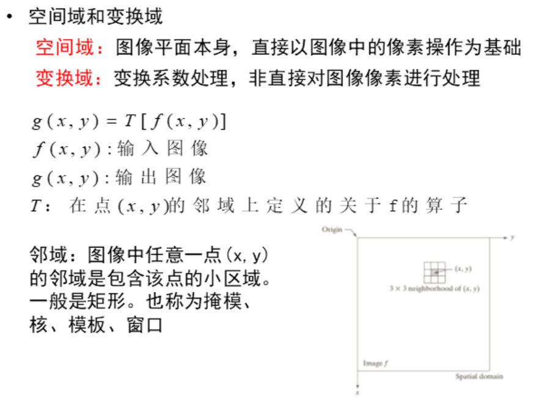

前面讲过的未进行直方图匹配得到的直方图均衡的结果如下:

进行直方图匹配得到的直方图均衡的结果如下:


空间滤波:


空间相关和卷积的区别是:相关在运算时模板不用旋转,而卷积在运算时模板需要进行180度旋转
两者的运算方法都是将模板放到输入信号中从前往后、从上往下依次滑动,模板与对应位置的输入信号依次相乘,然后求和,将求和的结果
作为该位置的输出信号结果。(该位置是指: 一维的话是模板最右边元素所对应的位置,如果是二维则是模板的最中心元素所在的位置)
空间相关举例:

卷积举例:(运算过程与上图类似,只是模板在使用前先旋转了180度)

二维的空间相关和卷积举例:

滤波器之所以要求均值的目的是保证每个位置的运算结果不要超界:

均值滤波的作用:


次序统计滤波器都是根据点(x,y)邻域的所有值取得其中的中值(或最大值、最小值)作为点(x,y)的值,依次遍历所有像素点,得
到中值(或最大值、最小值)滤波器。
(点(x,y)的邻域即是模板,邻域即可能是1*1的、也可能是3*3的、还有可能是其他的)


注意图像处理中求一阶导和二阶导的求法:(下面是相对于一维的空间来说的;二维的话就是求偏导了,那么也是一样的,和高数一样,对x求
偏导就是保持y不变,求一阶偏导的结果就是f(x+1,y)-f(x,y),二阶偏导同理。)

注意在一维中,灰度值从左到右依次变化的一些叫法:

观察下图可以发现,图像处理中的一阶导和高数中的一阶导一样,预示着原函数的函数值(灰度值)的变化,递增还是递减。这里
的一阶导大于0表示灰度值在递增,小于0表示灰度值在减小。等于0表示灰度值保持不变。
二阶导也和高数中一样,预示着原函数是凹的还是凸的,大于0表示凹的,小于0表示是凸的,等于0表示是直的。或者说
二阶导预示着一阶导是递增还是递减。大于0表示一阶导在递增,小于0表示一阶导在递减,等于0表示一阶导的值不变。

用拉普拉斯算子进行锐化:


一阶导数求锐化:


一般用来做边缘提取: